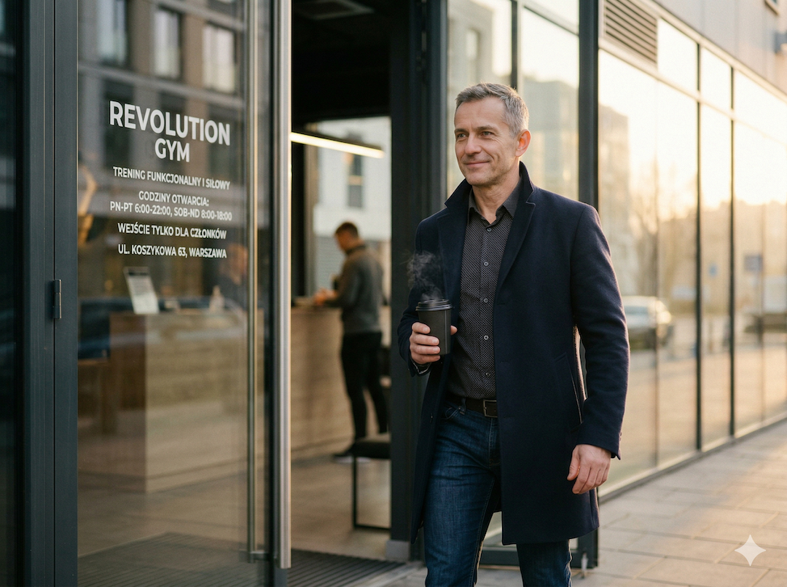
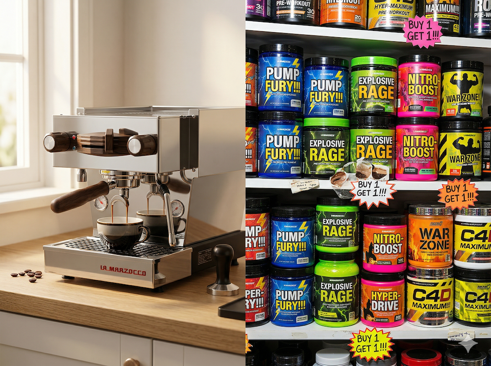
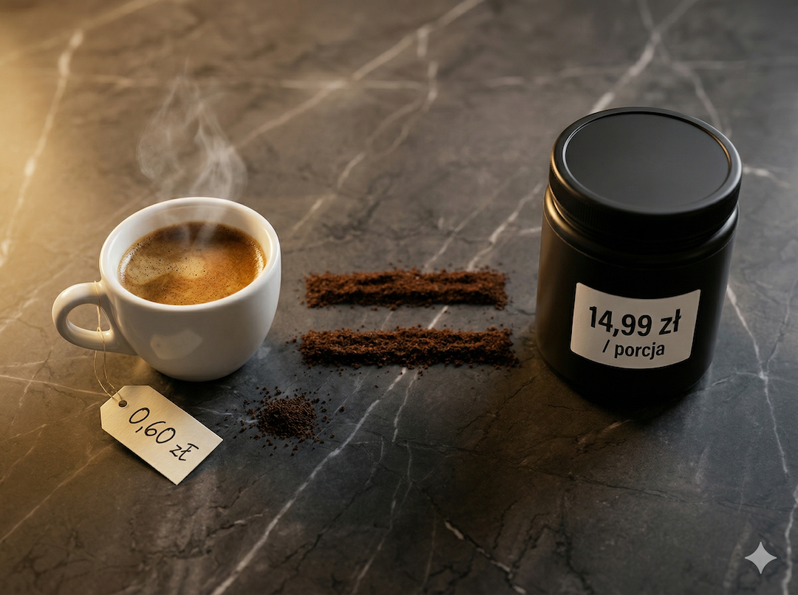
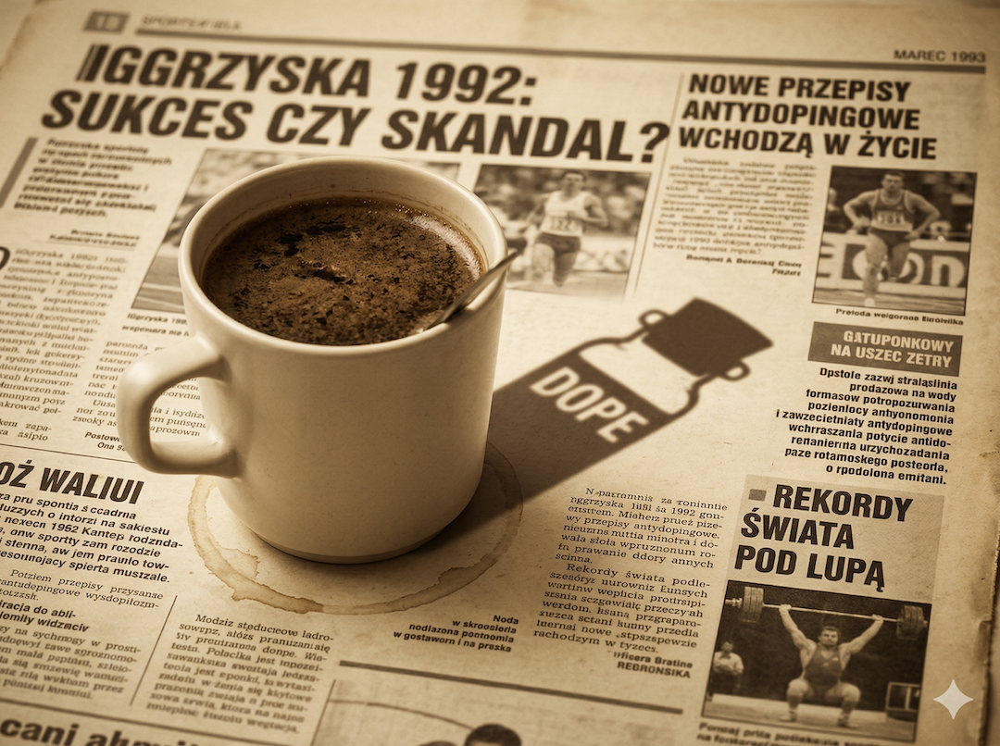
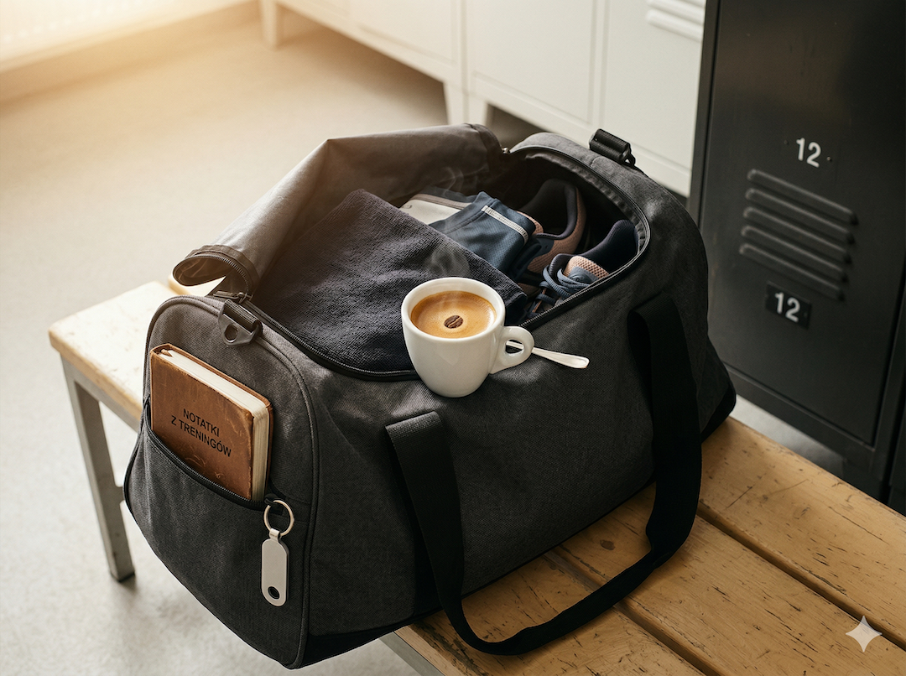

Jest jedna substancja, która przez dekady była zakazana przez międzynarodowe organizacje sportowe jako niedozwolony środek dopingujący. Na liście WADA figurowała aż do 2004 roku. 76% profesjonalnych sportowców używa jej przed zawodami. Jest najlepiej zbadanym ergogenicznym środkiem w historii sportu. I masz ją prawdopodobnie w kuchni. Kosztuje grosze. Nazywa się kawa.
Co się dzieje w Twoim ciele 60 minut po espresso
Kofeina wchłaniana jest przez żołądek i jelita. Szczytowe stężenie we krwi osiąga po 45–60 minutach. Następnie blokuje receptory adenozynowe w mózgu. Adenozyna to neuroprzekaźnik senności i zmęczenia — im dłużej jesteś aktywny, tym więcej się jej kumuluje i tym bardziej jesteś zmęczony. Kofeina dosłownie zajmuje miejsca, do których adenozyna chciałaby się przywiązać. Zmęczenie nie znika. Zostaje zablokowane.
Jednocześnie rośnie poziom adrenaliny i dopaminy. Serce bije mocniej. Przepływ krwi do mięśni rośnie. Wątroba uwalnia glukozę. Zaczynasz trenować tak, jakbyś był bardziej wypoczęty niż jesteś. To nie jest subiektywne odczucie — to chemia potwierdzona dziesiątkami badań klinicznych.
Optymalna dawka kofeiny przed treningiem według stanowiska ISSN (2021) to 3–6 mg na kilogram masy ciała, spożyta dokładnie 60 minut wcześniej. Dla osoby ważącej 80 kg to 240–480 mg — czyli 2–4 podwójne espresso. Minimalna dawka przy której widać mierzalny efekt: już 2 mg/kg.

Dane, nie odczucia
+7% siły mięśniowej — taki średni wzrost siły wykazuje meta-analiza z Nutrients 2024 po zastosowaniu kofeiny przed treningiem siłowym (WMD 7,09). Przy wytrzymałości mięśniowej: przeciętnie 1–2 dodatkowe powtórzenia do zmęczenia.
Co kupujesz zamiast kawy — i ile przepłacasz
Pre-workout za 20 zł za porcję i dwie czarne kawy za 12 zł mogą zawierać podobną dawkę kofeiny. Różnica? Opakowanie jest niebieskie, świeci się w ciemności i zawiera 27 gramów cukru, taurynę i barwniki, których organizm nie potrzebuje.
Czarna kawa poza kofeiną zawiera ponad 400 różnych bioaktywnych związków — kwasy chlorogenowe, melanoidyny, diterpeny. Badania wskazują, że wspierają metabolizm glukozy i działają antyoksydacyjnie. Stanowisko ISSN z 2023 roku stwierdza wprost: kawa jest ergogenicznie równoważna czystej tabletce z kofeiną. I ma dodatkowe korzyści, których tabletka nie ma. Jeśli temat suplementów chcesz domknąć szerzej, sprawdź też materiał o suplementacji po 50-tce.
Inaczej mówiąc: płacisz prawie dwa razy więcej za mniej kofeiny w gorszej formie. Bo opakowanie jest niebieskie i świeci się w ciemności. Marketing robi swoje.

MIT vs rzeczywistość
Mit: drogi pre-workout działa lepiej niż kawa, bo ma więcej składników aktywnych.
Rzeczywistość: ISSN (2023) potwierdza, że kawa jest ergogenicznie równoważna czystej kofeinie i zawiera setki dodatkowych związków bioaktywnych.
Jak efektywnie wypić kawę przed treningiem — 4 zasady
Czarna kawa, 2–3 podwójne espresso. Bez mleka — tłuszcz spowalnia wchłanianie kofeiny i przesuwa szczyt działania. Wypij dokładnie 60 minut przed treningiem, a nie 20 minut. Organizm potrzebuje czasu, żeby zrobić swoje.
Nie pij na pusty żołądek, jeśli masz wrażliwy przewód pokarmowy — kawa może nasilić objawy refluksu lub dyskomfort. I odetnij kawę najpóźniej 6–8 godzin przed snem. Jej półokres eliminacji to 5–6 godzin, a po 50-tce metabolizm kofeiny zwalnia nawet o 30–40%. Popołudniowe espresso o 15:00 może skutecznie utrudnić zasypianie jeszcze o 21:00. Dlatego przy planowaniu wysiłku uwzględnij także sen i regenerację po 50-tce.

Ciekawostka
Gen CYP1A2 kontroluje szybkość rozkładu kofeiny przez wątrobę. Z wiekiem aktywność tego enzymu maleje o 30–40%. Ta sama dawka, która w wieku 30 lat znikała po 5 godzinach, po pięćdziesiątce może działać 6–8 godzin.
Kawa na liście WADA — historia, którą warto znać
Międzynarodowy Komitet Olimpijski przez dekady uznawał kofeinę za substancję dopingującą i karał sportowców, u których stężenie w moczu przekraczało 12 μg/ml. Zakaz obowiązywał aż do 2004 roku, gdy WADA usunęła kofeinę z listy zakazanych substancji po analizie danych, umieszczając ją jednocześnie w programie monitoringowym jako substancję obserwowaną.
Efekt był natychmiastowy: po 2004 roku 74–76% sportowców wyczynowych stosuje kofeinę przed zawodami regularnie i otwarcie. Zawodnicy traktują ją jak legalne wspomaganie od dekad, bo działa. Jeśli wracasz do aktywności po przerwie, najpierw ułóż bazę ruchową i technikę, np. według planu treningu siłowego po 50-tce.

MIT vs rzeczywistość
Mit: kawa odwadnia i szkodzi treningowi.
Rzeczywistość: stanowisko ISSN (2021) i metaanaliza w PLOS One (2014) nie potwierdzają istotnego efektu odwadniającego przy umiarkowanym spożyciu u osób przyzwyczajonych do kofeiny.
Kto nie powinien pić kawy przed treningiem
Kofeina nie jest dla każdego i warto to powiedzieć wprost. Osoby z nieuregulowanym nadciśnieniem tętniczym lub arytmią serca powinny skonsultować spożycie kofeiny z lekarzem przed włączeniem jej do rutyny treningowej — kofeina przejściowo podnosi ciśnienie i może nasilać zaburzenia rytmu. To samo dotyczy osób z refluksem, który kawa potrafi wyraźnie zaostrzyć.
Genetyczna zmienność genu CYP1A2 sprawia, że część osób metabolizuje kofeinę bardzo wolno i nawet mała dawka daje nieprzyjemne kołatania serca lub bezsenność trwającą całą noc. Jeśli kawa zawsze Ci szkodziła, jesteś prawdopodobnie wolnym metabolizatorem. Nie ma sensu tego forsować — efekt treningowy nie jest wart rozbitej nocy.
Jeśli ćwiczysz wieczorami i masz problemy ze snem, rozważ przesunięcie treningu na wcześniejszą godzinę albo rezygnację z kawowej rutyny przedtreningowej. Sen jest ważniejszy niż +7% siły.

Szybkie odpowiedzi (Q&A)
Ile kawy wypić przed treningiem?
Optymalna dawka to 3–6 mg kofeiny na kilogram masy ciała, spożyta 60 minut przed treningiem. Dla osoby ważącej 80 kg to 2–4 podwójne espresso. Zacznij od 2 espresso i obserwuj reakcję organizmu.
Czy kawa działa tak samo jak tabletka z kofeiną?
Pod kątem ergogenicznym tak. Według stanowiska ISSN z 2023 roku kawa jest równoważna czystej kofeinie, a dodatkowo zawiera setki związków bioaktywnych.
Czy kawa odwadnia podczas treningu?
Przy umiarkowanych dawkach do 6 mg/kg i u osób przyzwyczajonych do kofeiny nie obserwuje się znaczącego odwodnienia. Bilans płynów po kawie pozostaje dodatni.
Dlaczego po 50-tce trzeba uważać z dawką?
Po 50-tce metabolizm kofeiny zwykle zwalnia, więc ta sama dawka działa dłużej. Dlatego zacznij niżej niż kiedyś i monitoruj jakość snu.
Czy mogę pić kawę przed treningiem jeśli mam nadciśnienie?
Jeśli nadciśnienie jest nieuregulowane lub masz zaburzenia rytmu serca, decyzję trzeba skonsultować z lekarzem przed wdrożeniem kofeiny przed treningiem.
W skrócie
- Kofeina blokuje receptory adenozynowe, zmniejszając odczuwanie zmęczenia podczas wysiłku.
- Optymalna dawka przed treningiem to zwykle 3–6 mg/kg masy ciała, 60 minut przed startem.
- Kawa jest ergogenicznie porównywalna z tabletką kofeiny, a przy okazji wnosi dodatkowe związki bioaktywne.
- Pre-workout bywa wielokrotnie droższy mimo podobnej lub niższej dawki kofeiny.
- Po 50-tce kofeina może działać dłużej, dlatego wieczorne dawkowanie częściej psuje sen.
- Przy nadciśnieniu, arytmii i refluksie przedtreningową kofeinę trzeba omówić z lekarzem.
Źródła
- Guest NS et al. International Society of Sports Nutrition position stand: caffeine and exercise performance. 2021.
- Wu W et al. Effects of Acute Ingestion of Caffeine Capsules on Muscle Strength and Endurance. Nutrients. 2024.
- Bilondi HT et al. Caffeine supplementation on muscular strength and endurance. Heliyon. 2024.
- Lowery LM et al. ISSN position stand: coffee and sports performance. 2023.
- Ruiz-Moreno C et al. Time course of tolerance to adverse effects associated with caffeine. Eur J Nutr. 2020.
- WADA: Monitoring Program (kofeina jako substancja monitorowana).
- Maughan RJ et al. IOC consensus statement: dietary supplements and the high-performance athlete. Br J Sports Med. 2018.